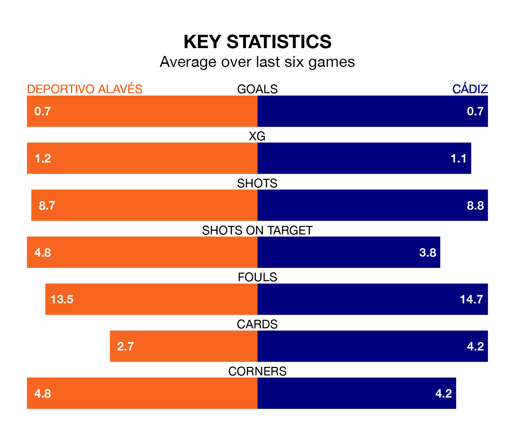

Cádiz travel to Estadio de Mendizorroza looking to secure a first win in 17 La Liga games against Deportivo Alavés on late Friday.
Cádiz have lost eight and drawn eight matches since they last earned three points – against Villarreal on September 1.
They face an Alavés side who have won three and drawn five over that time.
Cádiz are 18th in the table after 20 games, of which they have won two and drawn nine, earning 15 points.
Alavés are five places ahead of the away side in 13th, with five wins and five draws putting them on 20 points.
In the last five years, Alavés and Cádiz have played each other on five occasions. Alavés won one of them, Cádiz three, and they drew once.
On average, Alavés scored 0.8 goals and Cádiz 1.2 in those matches.
Their last meeting was on August 14, when Cádiz won 1-0 at home.
With 15 goals in 20 games so far this season, Cádiz are the league's lowest scorers with 0.8 goals per game. And they are conceding more than average, letting in 30 goals at a rate of 1.5 per game.
Depor are also below average scorers, with 0.9 goals per game, compared to a league average of 1.3. They have conceded 1.4 goals per game.
Alavés's last match was on January 12, a 3-2 win against Sevilla, with Kike García, Nahuel Tenaglia and Rubén Duarte getting the goals for Alavés.
Cádiz lost 4-1 against Valencia CF last time out, on Sunday, with Rubén Alcaraz on the scoresheet.
Updated: 14:53 (UTC), 16/01/24